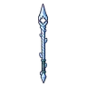

หนอนรอยแยก · ร่างน้ำแข็งฟ้าเข้ม
มอนธาตุน้ำ Lv 48–58
เจอที่
| แมพ | โซน | Lv | ภูมิภาค |
|---|---|---|---|
| ธารน้ำแข็งแตก | 48–58 | ดินแดนเหนือ |
ค่าสถานะตามเลเวล
| Lv | HP | ATK | DEF | MDEF | EXP | Job |
|---|---|---|---|---|---|---|
| 48 | 19,879 | 123–184 | 23 | 9 | 129 | 97 |
| 53 | 25,949 | 135–202 | 25 | 10 | 140 | 105 |
| 58 | 32,587 | 147–220 | 28 | 10 | 152 | 114 |
ตีด้วยธาตุไหนดี
แรงขึ้น: ลม ×1.75
เบาลง: ไฟ ×0.5 น้ำ ×0.25
วัตถุดิบที่ดรอป
| ของ | โอกาส | |
|---|---|---|
| เขี้ยวน้ำแข็ง | 82% | 1 ชิ้น (15% ได้ 2) |
อุปกรณ์ที่ดรอป (1)
| ของ | โอกาส |
|---|---|
 หอกยาวหนอนรอยแยก | 0.5% |
สกิล
ทุบพื้น (Lv 25+) · ทุบพื้น (Lv 60+) · ร่างแข็ง (Lv 60+)